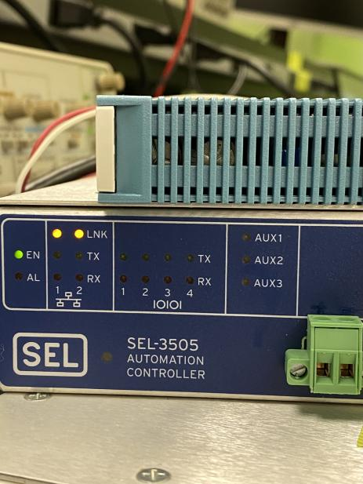

SEL Set-up Instructions and Commands(Tripping Relays)
Back to SEL Page
Running Commands
This table describes the process for tripping relays within our SCADA Network via a LAN Machine.
- Ensure all physical connections are secure and all systems are powered on(Refer to the SCADA Network Map).

- Wait for the enable "EN" led to illuminate on the RTAC3505.

- Ensure the machine we will be accessing is using our SCADA wifi or is plugged into the network.

- SSH using PUTTY or an SSH capable OS Shell. The Ethernet Port 1's IP Address on the RTAC 3505 is set to 10.1.1.31. The port destination is 3253.

- If the SSH needs troubleshooting, you can log in via the USB B port of the RTAC 3505 in the front. Plug that into your computer then enter 172.29.131.1 for the USB IP address and 3253 for the port.

- Log in using the RTAC3505 credentials: User: UHmanoa Password: Sel3505*

- From here, we need to gain the highest level of access using the command "acc", then "2ac". At this level we can use the command "who" to see all the connected devices and their ports.

- Access the 311B or the 451 using the command "por" followed by the port number of the device that was previously listed when we run "who".

- On 311B: Run the command "PUL out101 5" to CLOSE the OUTPUT 103 for 5 seconds. (Review The Manual for more info. pg 601 for commands)
- Run the command "PUL out103 5" to OPEN the OUTPUT 103 for 5 seconds.
- Run the command "pulse out101 5" to CLOSE the OUTPUT 103 for 5 seconds. (Review The Manual for more info)
- Run the command "pulse out103 5" to OPEN the OUTPUT 103 for 5 seconds.